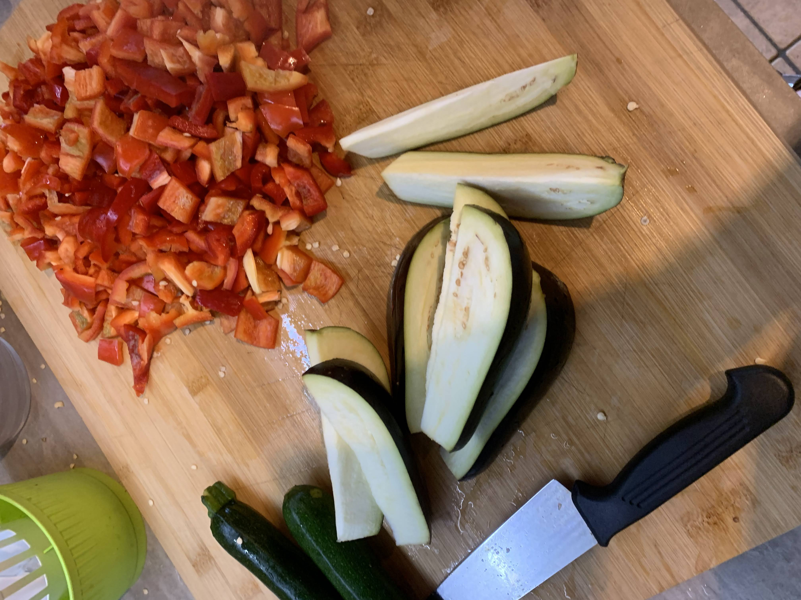
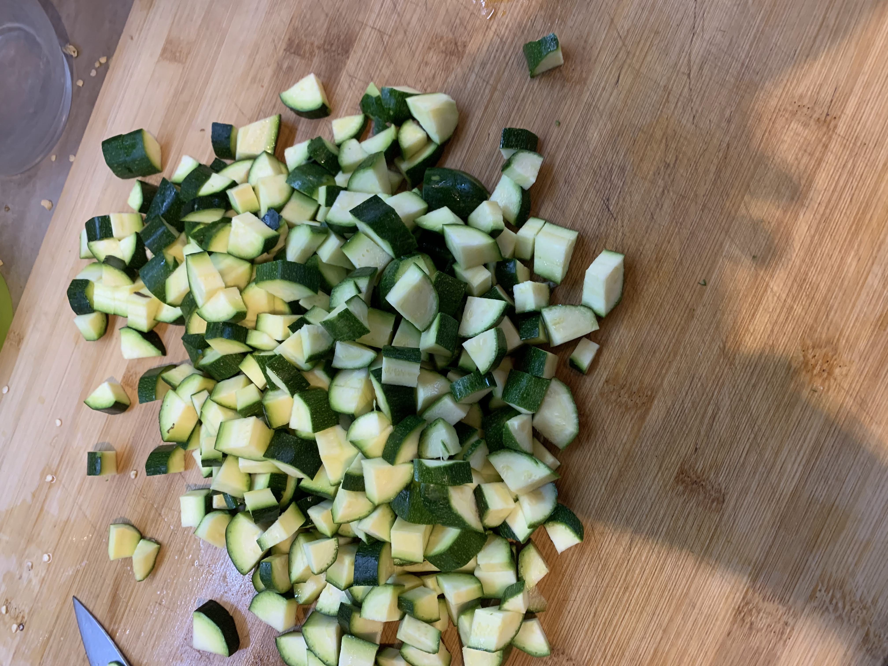
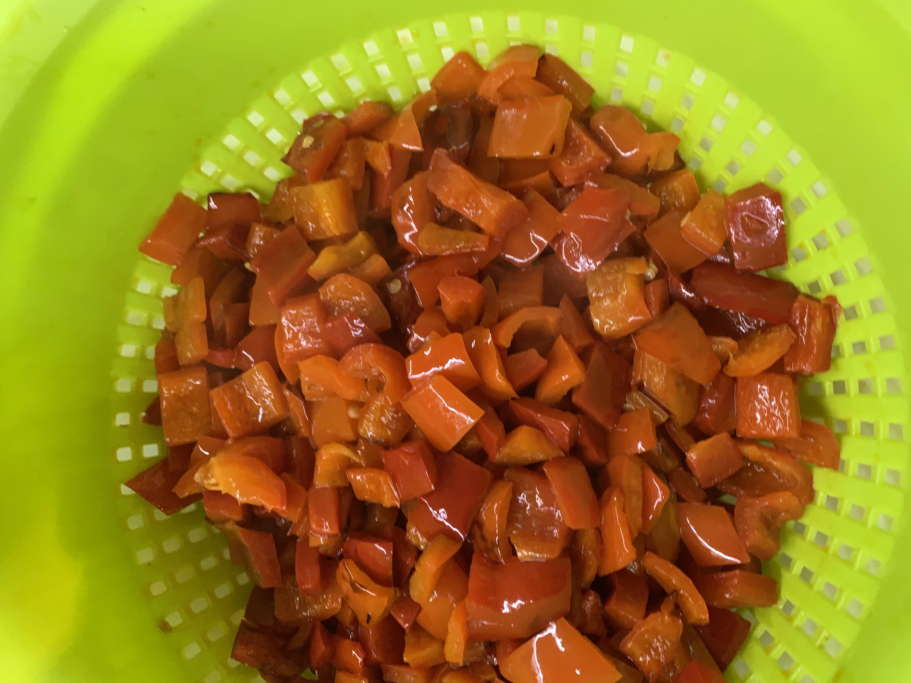
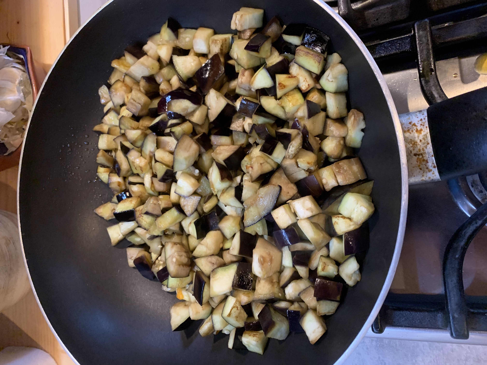
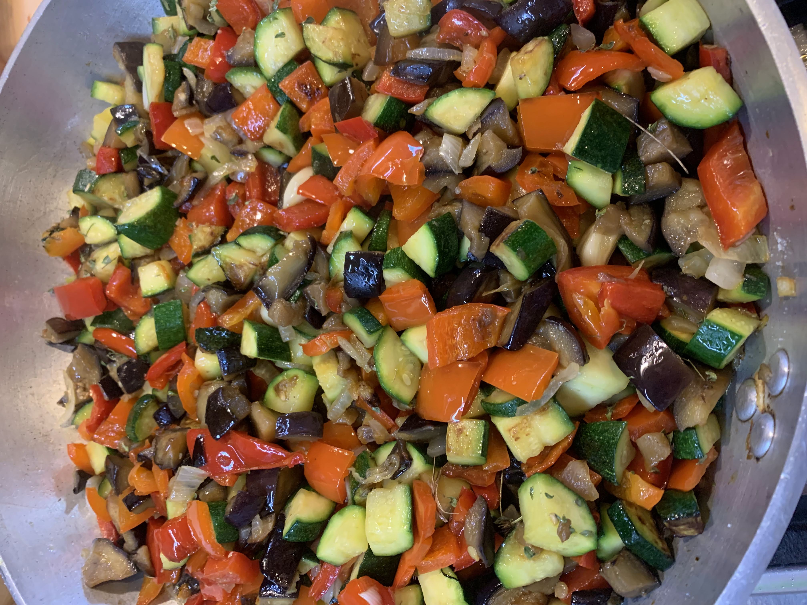
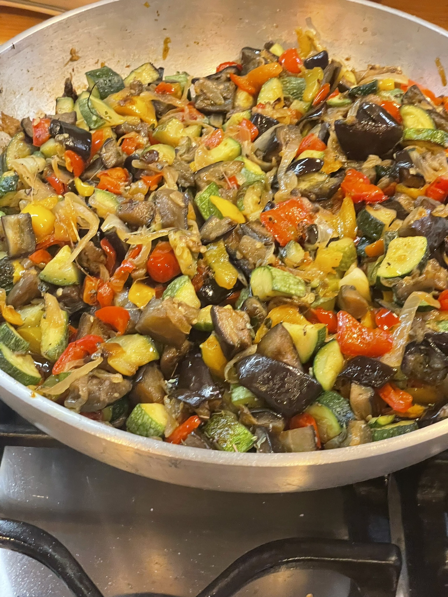

Ratatouille (variante)
Introduzione e contesto
Da una ricetta tradizionale una piccola variante che mi è stata suggerita

Scaltrire le verdure una qualità alla volta. In italiano si intende rendere scaltro, avveduto, attraverso una esperienza (scottarsi).Etimologia: ← lat. volg. cauterīre ‘bruciare’, deriv. di cauterĭum ‘cauterio’, perché il restare scottato induce a un comportamento più prudente. Il Veneto ha esteso il termine alla cucina intendendo per “scaltrire” fare saltare con olio e aglio qualcosa.
Ingredienti
| Ingrediente | Quantità | Unità | Note |
|---|---|---|---|
| Melanzane lunghe | 5 | n | |
| Zucchine | uguale peso delle melanzane | ||
| Peperoni gialli e rossi | 3 | n | |
| Cipolla bianca | 2 | n | |
| Aglio | 3 | n | |
| Basilico | |||
| Sale | |||
| Pepe |
Preparazione
Le verdure (freschissime, da produzione orticola) vanno tagliate a cubetti non più grandi di un paio di cm. max. Si possono tagliare progressivamente che si cuociono, per evitare una eventuale ossidazione. Si comincia dalle melanzane (cui avrete tolto il cuore, se ha semi grossi o colore alterato), poi zucchine, e infine i peperoni. Frattanto in una padella di grandi dimensioni avrete messo ad appassire due cipolle bianche con un paio di spicchi d'aglio. Scaltrire le verdure una qualità alla volta.


Non friggere, ma scottare. Il termine Veneto bene indica un procedimento di cottura parziale provenzale. In pratica si tratta di fare cuocere a fiamma viva i cubetti verdure con alcuni cucchiai di olio e spicchi di aglio. Le verdure devono restare croccanti. Non afflosciarsi. Molto indietro nella cottura.
Un poco rosolate tanto da cauterizzarsi, da formare una pellicola esterna che trattenga i liquidi interni. Man mano che saranno pronte, togliere dalla padella e passare in quella dove la cipolla appassisce, sempre a fuoco vivo. Se è il caso eliminare l'olio di troppo.A fine cottura. Aggiungere timo, sale, pepe, e continuare la cottura sintanto che le verdure mantengono la loro consistenza e sono ancora croccanti.




Aggiungere abbondante basilico. Già cos' è un ottimo contorno. Fredda il giorno dopo è una entrée superlativa. La cottura separata e non completa esalta i singoli sapori. Riscaldata e portata a fine cottura è un ottimo contorno, più tradizionale
Vino: Viogner del Rodano fresco.
{kind=link}